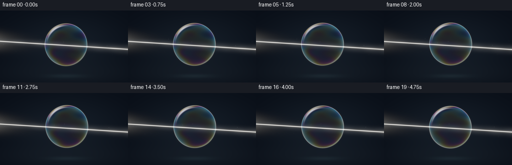
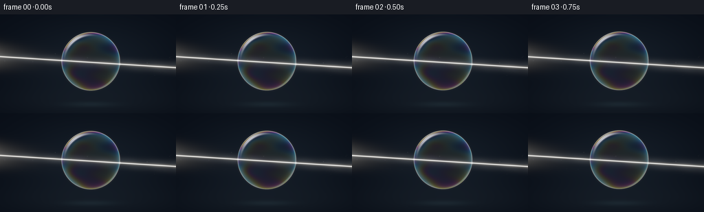

CODING AGENTS AS PIXEL WORLD MODELS
traex/GPT-6.1-Sol · phygen_090
点击播放 · 原生 RGB 像素
逐轮保存的候选
回放视频、检查图与代码变化。
每份候选均可单独播放。实际图片检查记录在下方工具轨迹中。
候选 01播放与检查图
点击播放 · 原生 RGB 像素


展开代码变化
--- 上一保存版本
+++ 本次保存版本
@@ -0,0 +1,148 @@
+"""Procedurally render a macro view of a light beam through a soap film.
+Only numpy/Pillow and analytic geometry are used. Run to regenerate all outputs.
+"""
+from pathlib import Path
+import json
+import numpy as np
+from PIL import Image
+import artifact_io
+
+ROOT = Path(__file__).resolve().parent
+SPEC = json.loads((ROOT / 'task_spec.json').read_text())
+W, H = SPEC['width'], SPEC['height']
+S = 4
+ww, hh = W*S, H*S
+X, Y = np.meshgrid((np.arange(ww)+.5)/S, (np.arange(hh)+.5)/S)
+RNG = np.random.default_rng(90)
+# A sparse, fixed set of microscopic motes, not a star-field.
+motes = [(RNG.uniform(0,W), RNG.uniform(30,105), RNG.uniform(.15,.48),
+ RNG.uniform(.012,.05), RNG.uniform(.5,1.5)) for _ in range(40)]
+
+
+def gauss(value, scale):
+ return np.exp(-.5*(value/scale)**2)
+
+
+def smooth(a,b,x):
+ q = np.clip((x-a)/(b-a),0,1)
+ return q*q*(3-2*q)
+
+
+def render(t):
+ cx = 132 + 1.65*np.sin(.55*t)
+ cy = 68.5 - 1.5*np.sin(.65*t)
+ rad = 42.2 + .15*np.sin(.85*t)
+ ux, uy = (X-cx)/rad, (Y-cy)/rad
+ rho = np.sqrt(ux*ux+uy*uy)
+ inside = rho < 1
+ nz = np.sqrt(np.clip(1-rho*rho,0,1))
+ angle = np.arctan2(uy,ux)
+
+ # A nearly black photographic background, subtly lit by airborne haze.
+ central = np.exp(-((X-133)/112)**2-((Y-70)/62)**2)
+ bg = np.empty((hh,ww,3), np.float32)
+ bg[:] = [.0018,.0030,.0060]
+ bg += central[...,None]*np.array([.0035,.006,.009])
+ lower_haze = np.exp(-((Y-128)/23)**2-((X-133)/140)**2)
+ bg += lower_haze[...,None]*np.array([.002,.003,.004])
+ # Out-of-focus pool of reflected illumination underneath the floating film.
+ bg += (np.exp(-((X-cx)/35)**2-((Y-131)/3.7)**2)[...,None]
+ *np.array([.003,.0065,.008]))
+
+ # A collimated, nearly horizontal white beam; its direction is continuous
+ # through the bubble because a micrometre-thick air/film/air shell does not
+ # behave as a solid glass ball or a dispersive prism.
+ slope = .063
+ by = 61.5 + slope*X + .55*np.sin(.43*t)
+ bd = (Y-by)/np.sqrt(1+slope*slope)
+ noise = (.83+.09*np.sin(.17*X-.08*Y+.4*t)
+ +.06*np.sin(.073*X+.3*Y-.21*t))
+ width = 1.03 + .0015*X
+ radiance = np.zeros_like(bg)
+ radiance += (gauss(bd,3.4+.006*X)*.037*noise)[...,None]*np.array([.81,.90,1.0])
+ radiance += (gauss(bd,width)*.18*noise)[...,None]*np.array([1.0,.93,.81])
+ radiance += (gauss(bd,.37)*1.65)[...,None]*np.array([1.0,.985,.92])
+ # Broad scattered light about the off-camera lamp on the left.
+ radiance += (np.exp(-X/26)*gauss(bd,10)*.05)[...,None]*np.array([1,.94,.83])
+
+ for px,py,size,power,speed in motes:
+ mx = (px + 1.1*t*speed) % W
+ my = py - .5*t*speed
+ proximity = np.exp(-.5*((my-(61.5+slope*mx))/7.5)**2)
+ if proximity > .025:
+ spot = np.exp(-.5*(((X-mx)/size)**2+((Y-my)/size)**2))
+ radiance += spot[...,None]*power*proximity*np.array([.84,.92,1.0])
+
+ # Transparent body: no solid-ball interior shading or false image magnification.
+ scene = bg + radiance
+ scene *= (1-.021*inside[...,None])
+
+ # Optical soap-film interference, with slow gravity-driven film drainage.
+ # Three representative wavelengths provide the RGB thin-film response.
+ thickness = (370 + 105*uy + 45*np.sin(2.7*ux+3.1*nz-.28*t)
+ + 22*np.sin(7.8*uy+2.8*ux+.27*t)
+ + 12*np.sin(12*uy-5*ux+.38*t))
+ cos_air = np.maximum(nz,.001)
+ cos_film = np.sqrt(1-(1-cos_air*cos_air)/(1.333**2))
+ rs = ((cos_air-1.333*cos_film)/(cos_air+1.333*cos_film))**2
+ rp = ((1.333*cos_air-cos_film)/(1.333*cos_air+cos_film))**2
+ reflect0 = (rs+rp)*.5
+ phase = 4*np.pi*1.333*thickness[...,None]*cos_film[...,None]/np.array([630.,535.,455.])
+ numerator = 4*reflect0[...,None]*np.sin(phase*.5)**2
+ film = numerator / ((1-reflect0[...,None])**2+numerator+1e-6)
+ # The gray part of broad-band reflection prevents unnaturally pure RGB bands.
+ film = .78*film+.22*np.mean(film,axis=2)[...,None]
+ rim_light = .16+.29*rho**4
+ env = (.36 + .32*smooth(-.5,.9,-uy)
+ + .16*gauss(angle-2.35,.48))
+ reflected = film*(rim_light*env*inside)[...,None]
+ scene += reflected
+
+ # Thin meniscus edge: a bright, delicate contour, with subdued bottom edge.
+ edge = gauss((rho-1)*rad,.23)
+ rim_color = .19 + .81*film
+ edge_strength = .15+.24*(.5-.5*uy)
+ scene += edge[...,None]*rim_color*edge_strength[...,None]
+ # Soft spill off the outer silhouette, not a solid colored outline.
+ scene += (gauss((rho-1)*rad,1.2)*.007)[...,None]*(.25+.75*film)
+
+ # Curved reflections of a long studio strip at the upper-left of the film.
+ angular_delta = np.arctan2(np.sin(angle+2.20),np.cos(angle+2.20))
+ strip = gauss(rho-.915,.021)*gauss(angular_delta,.30)*inside
+ scene += strip[...,None]*np.array([.80,.88,1.0])*.75
+ hairline = gauss(rho-.958,.0055)*gauss(angular_delta+.04,.23)*inside
+ scene += hairline[...,None]*np.array([1.0,.98,.91])*1.12
+ # A second soft reflection is much fainter and stays attached to the sphere.
+ delta2 = np.arctan2(np.sin(angle-.81),np.cos(angle-.81))
+ strip2 = gauss(rho-.966,.012)*gauss(delta2,.32)*inside
+ scene += strip2[...,None]*np.array([.12,.30,.32])*.31
+
+ # The incoming and outgoing beam meet the thin film at precisely its surface.
+ # Intersection locations are found analytically, with no artificial bending.
+ intercept = 61.5 + .55*np.sin(.43*t)
+ A = 1+slope*slope
+ B = 2*(slope*(intercept-cy)-cx)
+ C = cx*cx+(intercept-cy)**2-rad*rad
+ disc = max(0,B*B-4*A*C)
+ roots = [(-B-np.sqrt(disc))/(2*A),(-B+np.sqrt(disc))/(2*A)]
+ for i,px in enumerate(roots):
+ py = intercept+slope*px
+ glow = np.exp(-.5*(((X-px)/1.0)**2+((Y-py)/1.0)**2))
+ core = np.exp(-.5*(((X-px)/.36)**2+((Y-py)/.53)**2))
+ scene += glow[...,None]*np.array([.32,.36,.38])*(.5 if i==0 else .7)
+ scene += core[...,None]*np.array([1.,.98,.89])*.73
+
+ # Gentle photographic tone mapping and sRGB encoding.
+ scene = 1-np.exp(-np.maximum(scene,0)*1.35)
+ rgb = np.where(scene<=.0031308,12.92*scene,1.055*scene**(1/2.4)-.055)
+ rgb = np.uint8(np.clip(rgb*255+.5,0,255))
+ return np.asarray(Image.fromarray(rgb).resize((W,H),Image.Resampling.LANCZOS))
+
+
+def main():
+ frames = np.stack([render(i/SPEC['fps']) for i in range(SPEC['frames'])])
+ artifact_io.save(frames,ROOT)
+ print(f'Saved {len(frames)} RGB frames, {W}x{H}, {SPEC["fps"]} fps.')
+
+if __name__ == '__main__':
+ main()
可观测工具轨迹
实际执行的命令与返回图片。
命令 1exit 0
/bin/bash -lc 'ls -la && cat prompt.txt && cat GENERATION_RULES.md && cat task_spec.json'
命令 2exit 0
/bin/bash -lc 'cat artifact_io.py'
命令 3exit 0
/bin/bash -lc "cat > generate.py <<'PY'
\"\"\"Procedurally render a macro view of a light beam through a soap film.
Only numpy/Pillow and analytic geometry are used. Run to regenerate all outputs.
\"\"\"
from pathlib import Path
import json
import numpy as np
from PIL import Image
import artifact_io
ROOT = Path(__file__).resolve().parent
SPEC = json.loads((ROOT / 'task_spec.json').read_text())
W, H = SPEC['width'], SPEC['height']
S = 4
ww, hh = W*S, H*S
X, Y = np.meshgrid((np.arange(ww)+.5)/S, (np.arange(hh)+.5)/S)
RNG = np.random.default_rng(90)
# A sparse, fixed set of microscopic motes, not a star-field.
motes = [(RNG.uniform(0,W), RNG.uniform(30,105), RNG.uniform(.15,.48),
RNG.uniform(.012,.05), RNG.uniform(.5,1.5)) for _ in range(40)]
def gauss(value, scale):
return np.exp(-.5*(value/scale)**2)
def smooth(a,b,x):
q = np.clip((x-a)/(b-a),0,1)
return q*q*(3-2*q)
def render(t):
cx = 132 + 1.65*np.sin(.55*t)
cy = 68.5 - 1.5*np.sin(.65*t)
rad = 42.2 + .15*np.sin(.85*t)
ux, uy = (X-cx)/rad, (Y-cy)/rad
rho = np.sqrt(ux*ux+uy*uy)
inside = rho < 1
nz = np.sqrt(np.clip(1-rho*rho,0,1))
angle = np.arctan2(uy,ux)
# A nearly black photographic background, subtly lit by airborne haze.
central = np.exp(-((X-133)/112)**2-((Y-70)/62)**2)
bg = np.empty((hh,ww,3), np.float32)
bg[:] = [.0018,.0030,.0060]
bg += central[...,None]*np.array([.0035,.006,.009])
lower_haze = np.exp(-((Y-128)/23)**2-((X-133)/140)**2)
bg += lower_haze[...,None]*np.array([.002,.003,.004])
# Out-of-focus pool of reflected illumination underneath the floating film.
bg += (np.exp(-((X-cx)/35)**2-((Y-131)/3.7)**2)[...,None]
*np.array([.003,.0065,.008]))
# A collimated, nearly horizontal white beam; its direction is continuous
# through the bubble because a micrometre-thick air/film/air shell does not
# behave as a solid glass ball or a dispersive prism.
slope = .063
by = 61.5 + slope*X + .55*np.sin(.43*t)
bd = (Y-by)/np.sqrt(1+slope*slope)
noise = (.83+.09*np.sin(.17*X-.08*Y+.4*t)
+.06*np.sin(.073*X+.3*Y-.21*t))
width = 1.03 + .0015*X
radiance = np.zeros_like(bg)
radiance += (gauss(bd,3.4+.006*X)*.037*noise)[...,None]*np.array([.81,.90,1.0])
radiance += (gauss(bd,width)*.18*noise)[...,None]*np.array([1.0,.93,.81])
radiance += (gauss(bd,.37)*1.65)[...,None]*np.array([1.0,.985,.92])
# Broad scattered light about the off-camera lamp on the left.
radiance += (np.exp(-X/26)*gauss(bd,10)*.05)[...,None]*np.array([1,.94,.83])
for px,py,size,power,speed in motes:
mx = (px + 1.1*t*speed) % W
my = py - .5*t*speed
proximity = np.exp(-.5*((my-(61.5+slope*mx))/7.5)**2)
if proximity > .025:
spot = np.exp(-.5*(((X-mx)/size)**2+((Y-my)/size)**2))
radiance += spot[...,None]*power*proximity*np.array([.84,.92,1.0])
# Transparent body: no solid-ball interior shading or false image magnification.
scene = bg + radiance
scene *= (1-.021*inside[...,None])
# Optical soap-film interference, with slow gravity-driven film drainage.
# Three representative wavelengths provide the RGB thin-film response.
thickness = (370 + 105*uy + 45*np.sin(2.7*ux+3.1*nz-.28*t)
+ 22*np.sin(7.8*uy+2.8*ux+.27*t)
+ 12*np.sin(12*uy-5*ux+.38*t))
cos_air = np.maximum(nz,.001)
cos_film = np.sqrt(1-(1-cos_air*cos_air)/(1.333**2))
rs = ((cos_air-1.333*cos_film)/(cos_air+1.333*cos_film))**2
rp = ((1.333*cos_air-cos_film)/(1.333*cos_air+cos_film))**2
reflect0 = (rs+rp)*.5
phase = 4*np.pi*1.333*thickness[...,None]*cos_film[...,None]/np.array([630.,535.,455.])
numerator = 4*reflect0[...,None]*np.sin(phase*.5)**2
film = numerator / ((1-reflect0[...,None])**2+numerator+1e-6)
# The gray part of broad-band reflection prevents unnaturally pure RGB bands.
film = .78*film+.22*np.mean(film,axis=2)[...,None]
rim_light = .16+.29*rho**4
env = (.36 + .32*smooth(-.5,.9,-uy)
+ .16*gauss(angle-2.35,.48))
reflected = film*(rim_light*env*inside)[...,None]
scene += reflected
# Thin meniscus edge: a bright, delicate contour, with subdued bottom edge.
edge = gauss((rho-1)*rad,.23)
rim_color = .19 + .81*film
edge_strength = .15+.24*(.5-.5*uy)
scene += edge[...,None]*rim_color*edge_strength[...,None]
# Soft spill off the outer silhouette, not a solid colored outline.
scene += (gauss((rho-1)*rad,1.2)*.007)[...,None]*(.25+.75*film)
# Curved reflections of a long studio strip at the upper-left of the film.
angular_delta = np.arctan2(np.sin(angle+2.20),np.cos(angle+2.20))
strip = gauss(rho-.915,.021)*gauss(angular_delta,.30)*inside
scene += strip[...,None]*np.array([.80,.88,1.0])*.75
hairline = gauss(rho-.958,.0055)*gauss(angular_delta+.04,.23)*inside
scene += hairline[...,None]*np.array([1.0,.98,.91])*1.12
# A second soft reflection is much fainter and stays attached to the sphere.
delta2 = np.arctan2(np.sin(angle-.81),np.cos(angle-.81))
strip2 = gauss(rho-.966,.012)*gauss(delta2,.32)*inside
scene += strip2[...,None]*np.array([.12,.30,.32])*.31
# The incoming and outgoing beam meet the thin film at precisely its surface.
# Intersection locations are found analytically, with no artificial bending.
intercept = 61.5 + .55*np.sin(.43*t)
A = 1+slope*slope
B = 2*(slope*(intercept-cy)-cx)
C = cx*cx+(intercept-cy)**2-rad*rad
disc = max(0,B*B-4*A*C)
roots = [(-B-np.sqrt(disc))/(2*A),(-B+np.sqrt(disc))/(2*A)]
for i,px in enumerate(roots):
py = intercept+slope*px
glow = np.exp(-.5*(((X-px)/1.0)**2+((Y-py)/1.0)**2))
core = np.exp(-.5*(((X-px)/.36)**2+((Y-py)/.53)**2))
scene += glow[...,None]*np.array([.32,.36,.38])*(.5 if i==0 else .7)
scene += core[...,None]*np.array([1.,.98,.89])*.73
# Gentle photographic tone mapping and sRGB encoding.
scene = 1-np.exp(-np.maximum(scene,0)*1.35)
rgb = np.where(scene<=.0031308,12.92*scene,1.055*scene**(1/2.4)-.055)
rgb = np.uint8(np.clip(rgb*255+.5,0,255))
return np.asarray(Image.fromarray(rgb).resize((W,H),Image.Resampling.LANCZOS))
def main():
frames = np.stack([render(i/SPEC['fps']) for i in range(SPEC['frames'])])
artifact_io.save(frames,ROOT)
print(f'Saved {len(frames)} RGB frames, {W}x{H}, {SPEC[\"fps\"]} fps.')
if __name__ == '__main__':
main()
PY
python generate.py"命令 4exit 0
/bin/bash -lc "command -v ffmpeg || true; python - <<'PY'
import numpy as np
from pathlib import Path
from PIL import Image
p=np.load('pixels.npz')['pixels']
print('Pixel tensor:',p.shape,p.dtype)
a=np.array(Image.open('frames/00.png'))
print('RGB frame:',a.shape,a.dtype,'range:',a.min(),a.max())
print('Required artifacts:',all(Path(x).exists() for x in ['generate.py','pixels.npz','index.html','inspection.png','transition_check.png']))
print('Frame count:',len(list(Path('frames').glob('*.png'))))
PY"保存候选 1 份；完成命令 4 次；可验证图片返回 0 张。原始 API 响应与完整日志保留在本地。